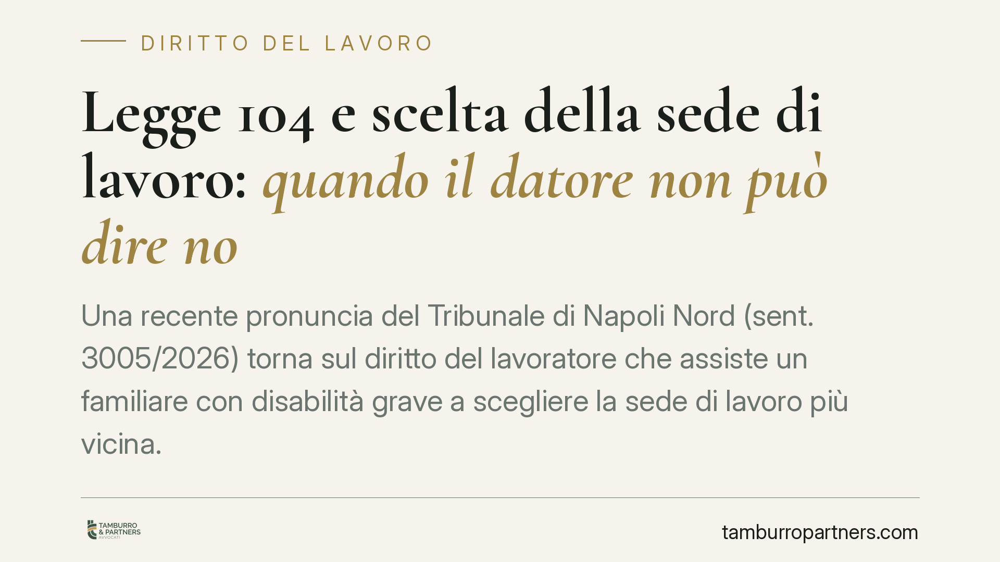

Legge 104 e scelta della sede di lavoro: quando il datore non può dire no
Una recente pronuncia del Tribunale di Napoli Nord (sent. 3005/2026) torna sul diritto del lavoratore che assiste un familiare con disabilità grave a scegliere la sede di lavoro più vicina. Il punto decisivo: il datore può opporre un rifiuto solo con prove documentali concrete e insuperabili. Chiarisce chi deve dimostrare cosa e perché le motivazioni generiche non reggono.

Il caso e il principio affermato
Il Tribunale di Napoli Nord, sezione lavoro, con sentenza n. 3005/2026 ha ribadito un orientamento ormai consolidato ma spesso disatteso nella pratica: il lavoratore che assiste un familiare con disabilità grave ha un vero e proprio diritto soggettivo a ottenere, ove possibile, la sede di lavoro più vicina al domicilio della persona assistita.
Non si tratta di una concessione discrezionale del datore. È una situazione giuridica tutelata, che il datore può comprimere solo in presenza di ostacoli reali, documentati e non superabili con misure organizzative alternative.
Inquadramento normativo
La base è l'art. 33, comma 5, della Legge 104/1992. La norma riconosce al lavoratore che assiste un familiare in situazione di handicap grave (accertata ai sensi dell'art. 3, comma 3, della stessa legge) il diritto a scegliere, ove possibile, la sede di lavoro più vicina al domicilio della persona assistita, e il diritto a non essere trasferito senza il suo consenso.
L'inciso "ove possibile" è il punto su cui si concentrano i contenziosi. La giurisprudenza di legittimità (tra le altre, Cass. civ., sez. lavoro) ha chiarito che non è una clausola che rimette la scelta alla libera valutazione aziendale. Indica che il diritto può cedere solo di fronte a esigenze tecniche, organizzative e produttive effettive, da provare in modo specifico.
Il Tribunale di Napoli Nord aggiunge il profilo che qui più interessa: l'onere della prova grava sul datore. È l'azienda a dover dimostrare che l'assegnazione o il mantenimento della sede richiesta è concretamente impossibile o determina un pregiudizio reale all'organizzazione. Non basta affermarlo: serve documentarlo.
Cosa cambia in concreto
Per il lavoratore con diritto ex art. 33 la pronuncia rafforza la posizione negoziale e processuale. Un rifiuto motivato con formule generiche — "carenza di organico", "esigenze di servizio", "copertura già garantita" — senza dati a supporto, è difficilmente difendibile in giudizio.
Per il datore di lavoro, pubblico o privato, il messaggio è netto: il diniego va costruito su elementi concreti. Significa indicare la pianta organica, i posti effettivamente disponibili o indisponibili nella sede richiesta, le ragioni tecniche che rendono impraticabile l'assegnazione, l'impossibilità di soluzioni alternative. In assenza di questa istruttoria documentale, il rifiuto rischia di essere dichiarato illegittimo, con possibili conseguenze risarcitorie.
Va ricordato che il diritto presuppone requisiti precisi: la disabilità grave accertata, il rapporto di assistenza effettiva e continuativa, e la disponibilità di una sede compatibile nell'organizzazione datoriale. Il diritto non impone al datore di creare una sede che non esiste, ma gli impedisce di negarla quando esiste ed è compatibile.
Sul piano probatorio, è utile che il lavoratore conservi tutta la documentazione a sostegno della propria richiesta: verbale di accertamento dell'handicap grave, prova del domicilio dell'assistito, eventuali precedenti istanze e relative risposte aziendali.
Cosa fare in concreto
- Formalizza l'istanza per iscritto: presenta la richiesta di sede o il rifiuto di trasferimento con comunicazione tracciabile (PEC o protocollo), allegando il verbale di accertamento dell'handicap grave.
- Documenta il presupposto dell'assistenza: raccogli le prove del rapporto di cura continuativa e del domicilio del familiare assistito, elementi che fondano il diritto.
- Chiedi le ragioni del diniego: se il datore nega, pretendi una motivazione specifica e verifica se è supportata da dati reali o è una formula di stile.
- Valuta tempi e strumenti di tutela: in caso di rifiuto non documentato, considera l'azione giudiziale, anche in via d'urgenza, per ottenere l'assegnazione o impedire il trasferimento.
- Conserva ogni scambio: ogni comunicazione con il datore può diventare elemento probatorio sull'illegittimità del comportamento aziendale.
La pronuncia non introduce un diritto nuovo, ma rende più difficile aggirarlo con dinieghi apparenti. Consigliamo di affrontare queste vicende con un'istruttoria documentale ordinata fin dal primo passaggio: è spesso ciò che determina l'esito.
Disclaimer
Contributo informativo a cura di Tamburro & Partners - Avv. Giuseppe Tamburro. Non costituisce parere legale.
Ogni storia di lavoro ha i suoi tempi.
Se gestisci HR e vuoi un confronto su contenzioso, ispezioni o licenziamenti, scrivi allo studio. Ti rispondiamo entro un giorno lavorativo.